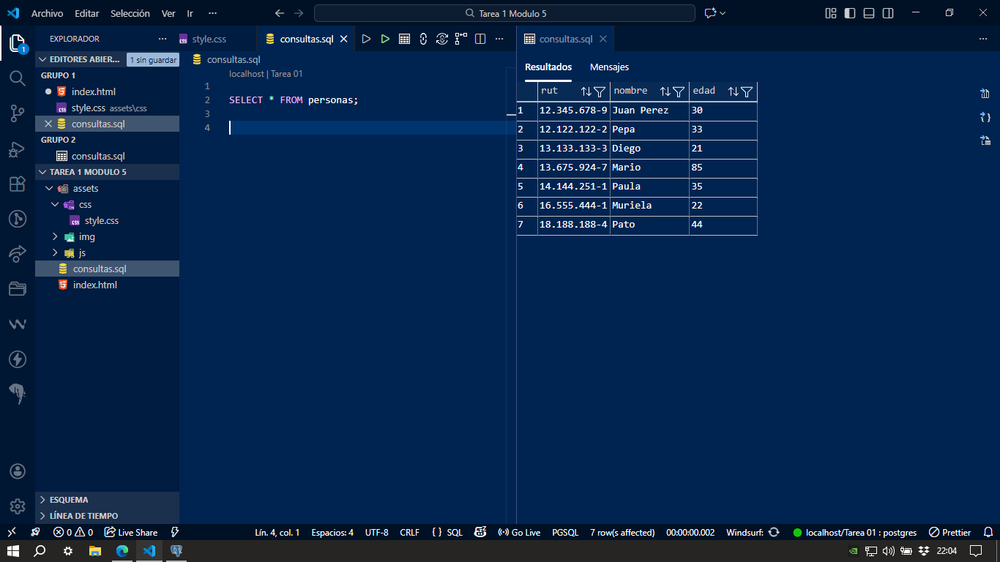
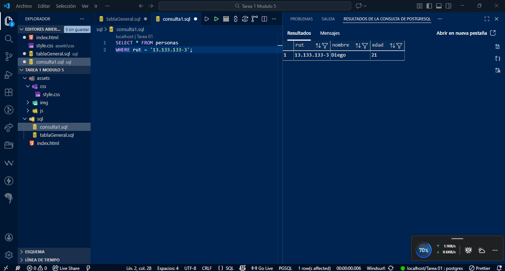
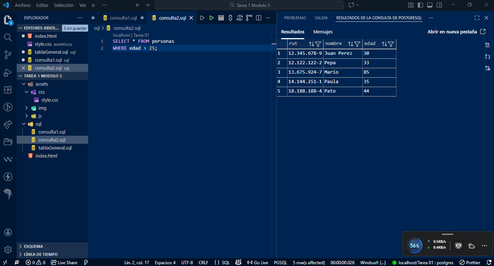
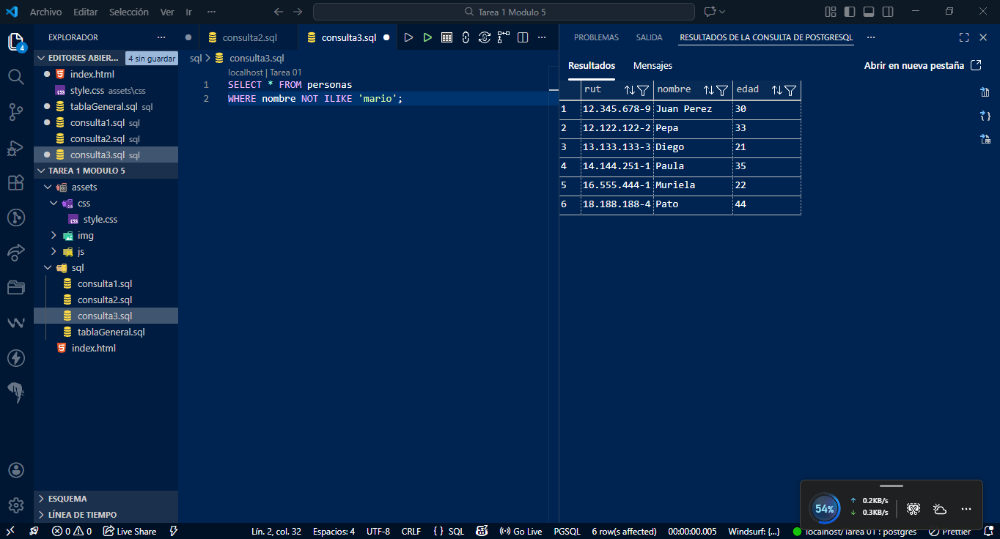
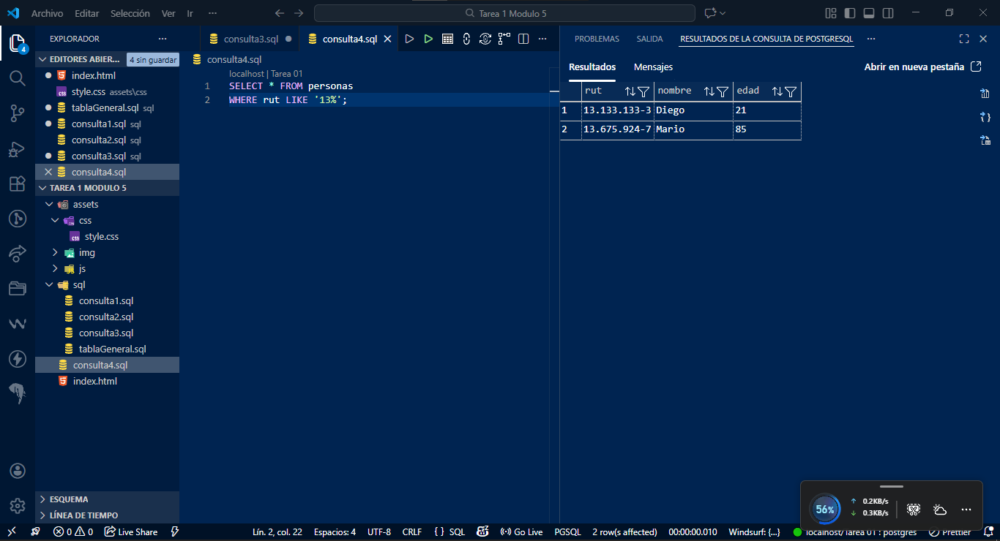
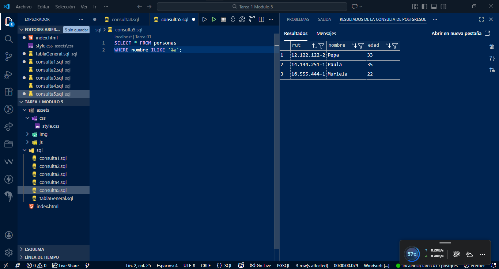
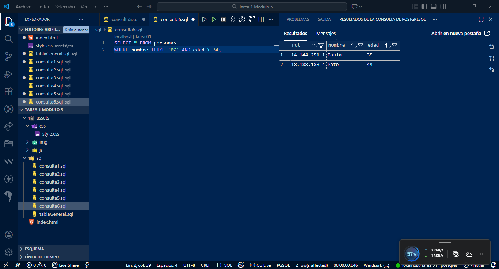
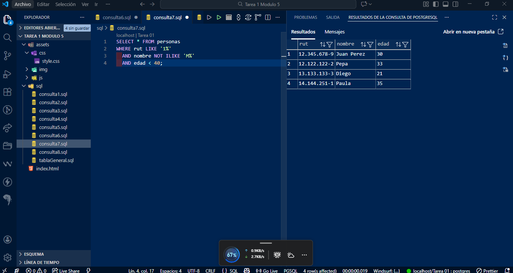
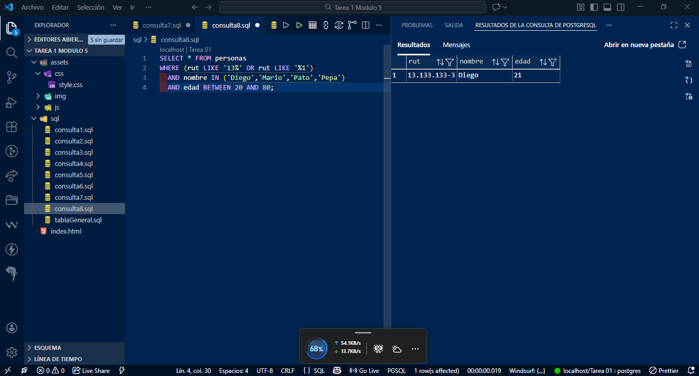

Consultas SQL – PostgreSQL
Evidencia de consultas ejecutadas
Tabla Completa

1. Cliente con RUT 13133133-3

2. Clientes mayores de 25 años

3. Clientes que no se llamen Mario

4. Clientes con RUT iniciado en 13

5. Clientes con nombre terminado en A

6. Nombre iniciado en P y edad mayor a 34

7. RUT iniciado en 1, nombre no iniciado en M y edad menor a 40

8. Consulta compleja (OR, IN, BETWEEN)
